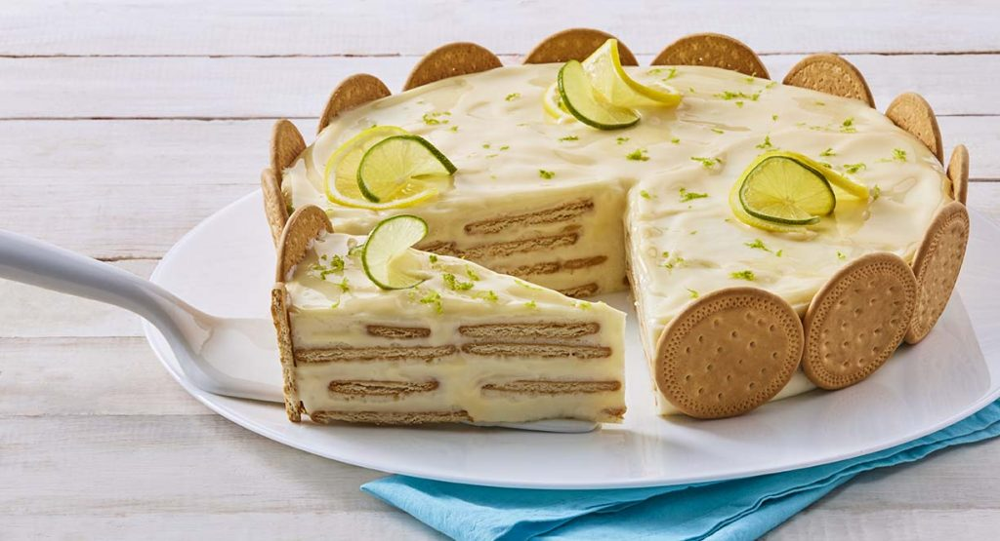

Carlota de Limón

Descripción
Una deliciosa y refrescante Carlota de Limón con capas de galletas y un toque de limón. ¡Perfecta para disfrutar en cualquier ocasión!
Ingredientes
- 1 paquete de galletas Marías
- 1 lata de leche condensada
- 1 lata de leche evaporada
- 1/2 taza de jugo de limón
- Ralladura de limón para decorar (opcional)
Equipo Necesario
- Batidora o licuadora
- Espátula
- Molde rectangular o refractario
- Refrigerador
Pasos de Preparación
- En una licuadora, mezcla la leche condensada, la leche evaporada y el jugo de limón hasta obtener una mezcla cremosa.
- Coloca una capa de galletas Marías en el fondo del molde.
- Vierte una capa de la mezcla de limón sobre las galletas.
- Repite el proceso de capas hasta llenar el molde.
- Refrigera por al menos 2 horas o hasta que esté firme.
- Decora con ralladura de limón antes de servir, si lo deseas.
Consejos y Variantes
- Para un sabor extra, añade un poco de ralladura de limón a la mezcla.
- Si prefieres menos dulzor, usa menos leche condensada.
- Prueba con otros cítricos como lima o naranja.
- Puedes agregar una barra de queso Philadelphia para conseguir una textura más cremosa.